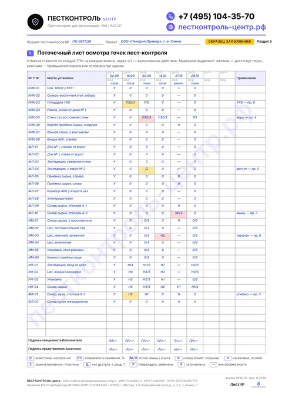

Образец заполнения журнала пест-контроля
Заполненный журнал пекарни за сентябрь–октябрь: 30 точек контроля, поточечные отметки, находки грызунов и тараканов, предписания и их выполнение, сигналы персонала, сводка за месяц.
Скачать образец, PDFЖурнал пест-контроля — рабочий документ объекта, где по каждой пронумерованной точке контроля записывают результат осмотра, применённые средства, находки вредителей и выполнение предписаний. Ниже — готовая форма из 9 разделов: образец заполнения на примере пекарни и шаблон-бланк для печати. Оба файла в PDF и совпадают лист в лист.
Шаблон журнала для печати, PDF

Два файла одной формы, совпадают лист в лист. Образец показывает, как выглядят правильные записи за два месяца работы. Шаблон — тот же журнал без записей: его печатают и заполняют от руки.
Заполненный журнал пекарни за сентябрь–октябрь: 30 точек контроля, поточечные отметки, находки грызунов и тараканов, предписания и их выполнение, сигналы персонала, сводка за месяц.
Скачать образец, PDFТот же журнал из 9 разделов без записей, с разлинованными таблицами. Листы визитов, поточечного осмотра и предписаний распечатайте в нужном количестве, затем пронумеруйте и прошнуруйте журнал.
Скачать шаблон, PDF0 из 6
Отметьте, что уже есть в вашем журнале. Если чего-то не хватает — на бесплатном обследовании сверим журнал, схему и точки на объекте и покажем, что исправить до проверки.
Проверить журнал на объектеТак устроен бланк ПЕСТКОНТРОЛЬ Центра. В одном документе — журнал учёта дератизации и дезинсекции, журнал мониторинга вредителей и лист осмотра ловушек. Каждый раздел отвечает на вопрос проверяющего: что за объект, где стоят точки, чем работали, что нашли и что сделали.

Раздел 5 образца: поточечный лист осмотра. Маркером: жёлтым — достигнут порог, красным — превышение или отлов внутри здания.
Скачать шаблон, PDFФрагменты журнала пекарни: 30 точек контроля, визиты 2 раза в месяц, один внеплановый выезд по сигналу персонала. Видно не только находки, но и «нули», замены приманки и закрытые предписания.
Каждая клетка — результат осмотра точки на конкретном визите. Через «/» — что сделал специалист.
Таблицу можно прокрутить вправо →
| № ТПК | Место установки | 16.09 | 30.09 | 14.10 | 21.10 (внепл.) | 28.10 |
|---|---|---|---|---|---|---|
| КИК-03 | Площадка ТКО | П25/З | П10 | 0 | — | 0 |
| КИК-05 | Отмостка восточной стены | 0 | П50/З | П20/З | — | П5 |
| МЛ-04 | Экспедиция, у ворот № 2 | 0 | Д | 0 | — | 0 |
| МЛ-10 | Склад сырья, стеллаж А-2 | 0 | 0 | 0 | М1/З | 0 |
| ИМ-03 | Моечное отделение цеха | 0 | 0/З | Н2 | — | 0/З |
| ИЛ-01 | Экспедиция, над входом из цеха | Н14 | Н11/З | Н7 | — | Н4/З |
| ФЛ-01 | Склад муки, стеллаж Б-1 | Н2 | Н1 | 0 | 0 | 0 |
Именно эту таблицу аудитор ХАССП смотрит, чтобы понять, работают ли корректирующие действия.
| № и дата | Точка | Что выявлено | Рекомендация | Срок | Результат |
|---|---|---|---|---|---|
| № 4 · 30.09 | КИК-05 | 2 норы у отмостки, строительный мусор | Засыпать и утрамбовать норы, вывезти мусор | АХО, до 07.10 | Выполнено 06.10. На 14.10 новых нор нет, поедаемость снизилась с 50 до 20 %, к 28.10 — 5 % |
| № 6 · 14.10 | ИМ-03 | Рыжий таракан, 2 особи; отслоение герметика за моечной ванной, влага | Санобработка за ванной, герметизация шва; точечная обработка гелем | Нач. цеха, до 21.10 | Выполнено 20.10. Контроль 28.10 — 0 особей, обработка эффективна |
| № 7 · 21.10 | МЛ-10 | Отлов мыши после сигнала кладовщика; ввод кабеля в стене не загерметизирован | Заделать отверстие металлической сеткой и герметиком | Гл. инженер, до 28.10 | Выполнено 27.10. На 28.10 в МЛ-10 — 0 |
| № 8 · 28.10 | КИК-03 | Крышки контейнеров ТКО не закрываются | Заменить контейнеры или крышки, держать закрытыми | АХО, до 11.11 | В работе — проверка на визите 11.11 |
Правила напечатаны и на втором листе бланка, чтобы их видели все, кто открывает журнал.
Специалист заполняет журнал до ухода с объекта, представитель Заказчика подписывает визит. Записи «по памяти» через неделю — первое, что замечают проверяющие.
Номер в журнале совпадает с план-схемой и указателем на стене. Если точку перенесли, это отмечают в таблице изменений расстановки и обновляют схему.
«0» значит: точку осмотрели, находок нет. Пустая клетка читается как пропущенный осмотр. Нет доступа — код «Д» и запись в лист предписаний.
Указывают номер средства из согласованного перечня, место и расход. Родентициды — только в запираемых станциях на территории, не в помещениях с открытой продукцией.
Нора, щель под воротами, просыпи, влага: причина записывается с ответственным и сроком. Закрывают запись только после проверки на следующем визите.
Зачеркнуть одной линией, рядом верная запись, дата и подпись. Корректор, подчистки и вклеенные листы делают журнал недостоверным.
Форма одна, меняются набор точек, зоны и то, на что смотрит проверяющий. Все эти объекты входят в перечень пункта 98 СанПиН 3.3686-21, поэтому обследования на насекомых — не реже 2 раз в месяц.
Компактный журнал на 10–20 точек: кухня, моечная, склад продуктов, зона приёма товара, мусорная площадка.
Отдельные зоны для торгового зала, склада и дебаркадера: здесь вредители чаще всего приходят с товаром.
Много точек по периметру здания и вдоль стен, где стоят паллеты: важно отмечать доступ к каждой.
Журнал как часть системы ХАССП: пороги из программы пест-контроля, анализ тенденций, корректирующие действия.
Проверяющий сверяет журнал со схемой точек, указателями на стенах и актами. Вот что чаще всего не сходится.
Если на объекте 30 точек контроля, по каждой должен быть виден результат. Общая фраза не показывает, что и где осматривали.
Пустые клетки читаются как пропущенный осмотр. «0» по каждой точке подтверждает, что специалист её проверил по графику.
Ловушку убрали при ремонте, а в журнале она по-прежнему «исправна». На обходе выборочную сверку точек со схемой делают почти всегда. Как вести схему и её редакции — на странице схемы точек пест-контроля.
«Разложена приманка» — не запись. Нужны наименование средства, действующее вещество, номер свидетельства о госрегистрации, место и расход.
Одна и та же щель у ворот из месяца в месяц и пустая графа выполнения показывают, что корректирующие действия не работают.
Одна ручка, одинаковый почерк и даты, которые не совпадают с актами и пропусками охраны, выдают записи задним числом.
Единого утверждённого бланка журнала пест-контроля нет. Требования к содержанию записей складываются из санитарных правил, методических рекомендаций и стандартов, по которым работает предприятие.
СанПиН 3.3686-21
Перечень объектов особого эпидемиологического значения (п. 98), обследования на насекомых не реже 2 раз в месяц (п. 101), дератизация по ежемесячной оценке (п. 110), контроль эффективности (п. 114).
МР 3.5.3.0374-25
Методические рекомендации Роспотребнадзора 2025 года по организации и проведению дератизационных мероприятий: обследование, учёт численности грызунов, оценка эффективности.
ТР ТС 021/2011
Процедуры на принципах ХАССП на пищевом производстве, в том числе меры, которые не дают грызунам и насекомым попасть в производственные помещения.
ГОСТ Р 54762-2011
Борьба с вредителями в программах предварительных требований: документированная программа, схема точек, записи мониторинга, анализ и корректирующие действия.
Что это значит для журнала. Санитарные правила требуют учитывать численность вредителей, оценивать эффективность мер и вести производственный контроль за дезинфекционными работами (пп. 82, 99, 114). Форму записей вы выбираете сами — но проверяющий должен увидеть по ней каждую точку, каждый визит и каждое закрытое замечание. Сроки и критерии учёта до и после обработки — в разборе «Как оценивают эффективность дератизации и дезинсекции».
Рядом с журналом кладут договор, программу, план-схему и акты и сверяют даты, номера точек и названия средств. По договору мы ведём всю папку.
| Документ | Что сверяют с журналом |
|---|---|
| Договор на дератизацию и дезинсекцию | Адрес и площади объекта, кратность визитов, реквизиты и лицензия подрядчика на титуле журнала |
| Программа пест-контроля | Целевые вредители, частота осмотров и пороги в реестре точек и поточечном листе |
| План-схема точек контроля | Количество, типы и нумерация точек, изменения расстановки |
| Акты и ежемесячный отчёт | Номер акта по каждому визиту в ведомости, анализ тенденций и закрытые предписания |
| Объект | Что входит | Ориентир |
|---|---|---|
| Кафе, ресторан, столовая | Контроль грызунов и насекомых, схема точек, объектовый журнал, копии СГР и акты | от 3 500 ₽/мес |
| Магазин, супермаркет | Торговый зал, склад и дебаркадер, поточечный журнал, отчётность для сети | от 3 500 ₽/мес |
| Склад до 1 000 м² | Периметр, доки и зоны хранения, журнал осмотров и предписаний | от 4 500 ₽/мес |
| Пищевое производство | Программа, схема, поточечный учёт, анализ тенденций для ХАССП, ЭДО | после бесплатного выезда |
Обследование объекта бесплатно. Проект договора с программой и расчётом присылаем в течение 1 часа после осмотра. На первом визите маркируем точки, передаём план-схему и заведённый журнал.
Принимаем объект с даты окончания прежнего договора: проверяем старые точки, обновляем схему и открываем новый журнал без перерыва в истории осмотров. Работаем с НДС и без НДС, по ЭДО и на бумаге.
Единой государственной формы нет. СанПиН 3.3686-21 требует учитывать численность вредителей, контролировать эффективность истребительных мероприятий и вести производственный контроль за их объёмом и качеством (пп. 82, 99, 114), а форму записей определяет программа пест-контроля объекта и договор с подрядчиком. Поэтому журнал разных компаний выглядит по-разному. Наша форма из 9 разделов закрывает и требования санитарных правил, и то, что смотрят аудиторы ХАССП, ISO 22000 и FSSC 22000.
На этой странице, бесплатно и без регистрации, два PDF-файла: образец заполнения на 10 листов (журнал пекарни за сентябрь–октябрь) и шаблон — тот же журнал без записей, он же бланк для печати. Файлы совпадают лист в лист, поэтому свой журнал удобно заполнять, глядя в образец. Листы визитов, поточечного осмотра и предписаний печатайте в нужном количестве, а номера листов проставьте при прошивке.
По смыслу да, но журнал пест-контроля шире. Простой журнал учёта дератизации и дезинсекции фиксирует выезды и обработки. Журнал пест-контроля дополнительно ведёт мониторинг вредителей по каждой точке контроля, учёт насекомых по видам, предписания и анализ тенденций — это нужно для ХАССП и аудитов. Ведомость визитов в нашей форме (раздел 4) одновременно служит журналом учёта дератизации и дезинсекции.
Результаты осмотров точек контроля, применённые средства и замечания вносит специалист подрядной организации в день визита. Ответственный сотрудник предприятия подписывает визит, отмечает выполнение предписаний и следит за сигнальным листом, куда персонал записывает наблюдения между визитами.
Запись делается при каждом плановом и внеплановом визите. Для объектов из пункта 98 СанПиН 3.3686-21 — пищевая промышленность, общественное питание, хранение и реализация пищевой продукции, гостиницы, медицинские организации и другие — плановые обследования на насекомых проводятся не реже 2 раз в месяц (п. 101), а дератизация — по результатам ежемесячной оценки (п. 110). Внутренние стандарты сетей и аудиторов могут требовать чаще.
Прямого требования в санитарных правилах нет, но для бумажного журнала это обычная практика: листы нумеруют, журнал прошнуровывают, а на последней странице делают заверительную надпись с числом листов, подписями и печатями сторон. Так видно, что листы не заменяли и не вклеивали задним числом.
Акт подтверждает конкретный выезд: перечень работ, расход средств, основание для оплаты, в том числе по ЭДО. Журнал хранится на объекте и показывает непрерывную историю каждой точки контроля из месяца в месяц, предписания и их выполнение. Номера актов указываются в ведомости визитов журнала, поэтому документы легко сверить.
Санитарные правила не запрещают электронный учёт, а для учёта дезинфекции прямо допускают программные продукты (п. 94 СанПиН 3.3686-21). На практике на объекте держат бумажный журнал с подписями, а электронный отчёт с фото и трендами получает служба качества. Если ваш стандарт или торговая сеть принимает только электронные записи, проверьте, что в них видны дата, автор и подтверждение Заказчика.
Пустую клетку оставлять нельзя. В поточечном листе ставится код «Д» — нет доступа — или «Р» — повреждена и заменена, а в лист предписаний вносится причина и срок: например, освободить проход вдоль стены. На следующем визите отмечается, восстановлен ли доступ.
Единый срок в санитарных правилах не установлен: его задаёт внутренний порядок предприятия, программа пест-контроля или требования сети. Часто журналы, акты и план-схемы хранят не меньше трёхлетнего цикла сертификации системы пищевой безопасности, чтобы на ресертификационном аудите была видна история.
Нет. Мы не заполняем журналы без фактической работы на объекте. Образец и шаблон журнала можно бесплатно скачать на этой странице, а рабочий журнал со схемой точек, программой и полным комплектом документов мы заводим и ведём по договору после бесплатного обследования.
Бесплатно приедем на объект в Москве или области, сверим точки контроля, схему и журнал с требованиями СанПиН 3.3686-21 и ХАССП и пришлём проект договора с расчётом в течение 1 часа после осмотра.